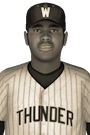

|
|
|  | Best Pitcher Honor Goes to More of Morgantown Wednesday, August 17th, 1932 Randolph More of the Morgantown Mountaineers was in command and couldn't do much wrong when he was on the mound this season. His outstanding 11-1 won-lost mark and 2.04 ERA were big factors in his winning the 1932 Eastern Baseball League EBL Pitcher of the Year. In 88.1 innings of work and 13 starts, More struck out 126 while giving up 73 hits and 14 walks. He held opposing batters to a .221 average. He received 10 first place votes, as a unanimous winner. Andrew Marquis of the Gallant Black Sox finished second in voting, while Stirling Mostrom of the North Bay Battalion finished third. Player - Team - First Place - Total Points Randolph More - Morgantown Mountaineers - 10 - 70 Andrew Marquis - Gallant Black Sox - 0 - 35 Stirling Mostrom - North Bay Battalion - 0 - 32 Brodie Stevens - Springfield Falcons - 0 - 22 Jean-Luc Labrie - Buffalo Rapids - 0 - 5 Krongthip Bolduc - Buffalo Rapids - 0 - 4 Mason MacCabe - Hamilton Jr. Steelers - 0 - 2 |   |